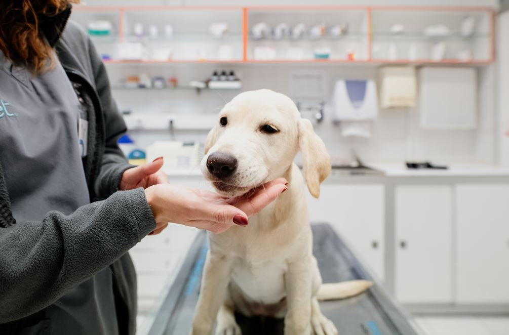

Serviços de Emergência 24h
Asseguramos serviços de emergência 24h por dia e 365 dias por ano para que possamos tratar do seu animal de forma rápida e eficaz.
Realizamos consultas e cirurgias para garantir a saúde do seu animal.
